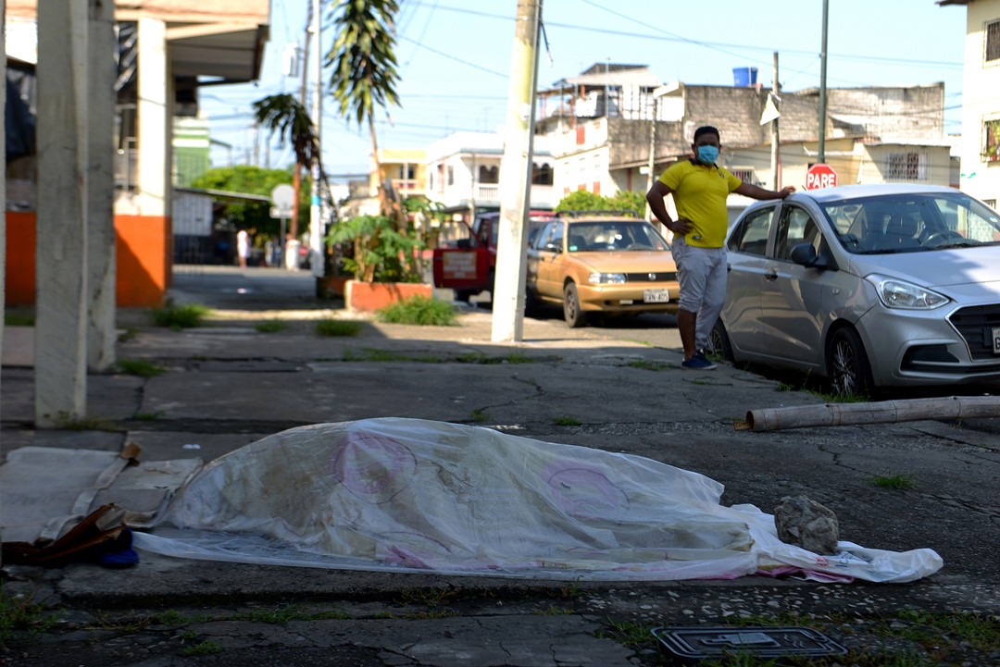
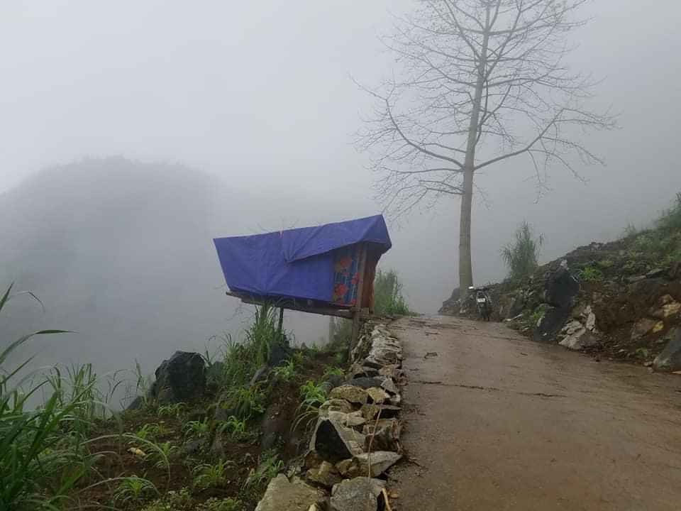

GIA ĐÌNH VÀ XÃ HỘI
Đồng loạt kiểm dịch y tế người vào TP.HCM
Du học sinh cách ly chung với Chí Tài: ‘Chú hoà đồng và vui tính’

Đại dịch Covid-19 ở Ecuador: thi thể bỏ trên phố, thiếu quan tài phải dùng thùng carton
Diễn viên gốc Việt trong 'Doctor Strange' của Marvel về Việt Nam làm 'cảnh sát cơ động'
Toàn cảnh dịch Covid-19 tới 6.4: Cả nước chỉ có 2 bệnh nhân là F3

Kỳ tích chàng trai cố dựng lán giữa núi rừng bắt wifi học online mùa dịch Covid-19
Lực lượng 'hung thần' phục vụ dã tâm của Trung Quốc trên biển
Hà Nội phát hiện thêm trường hợp dương tính với SARS-CoV-2 liên quan Bệnh viện Bạch Mai
Khán giả sốc với tập phim toàn cảnh nóng trong 'Thế giới hôn nhân'
Dân mạng 'ném đá' khi 'YouTuber bị chỉ trích nhiều nhất Việt Nam' tái xuất